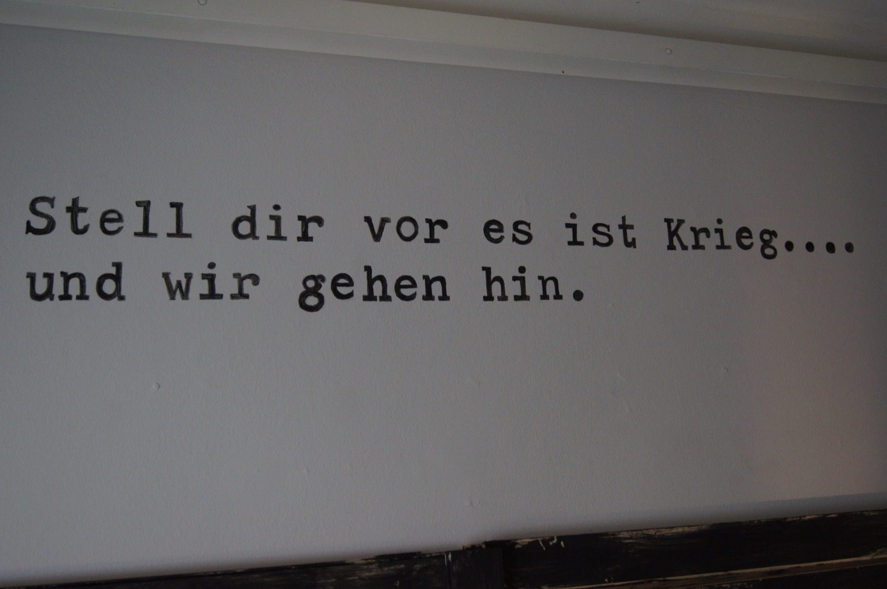

Kapitel 14 – Hjem til krigen
En fascinerende hjemrejse gennem en perlerække af østens vidunderlige seværdigheder udvikler sig til sidst til en nervepirrende flugt gennem fjendeland i de allerførste uger af Første Verdenskrig. Hele rejsen fra Ny Guinea til Als varer godt fire måneder.